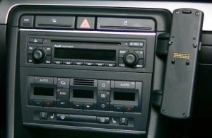

Cars manufactured about 10 years ago often do not provide bluetooth audio support. Here I describe a proven setup with bluetooth (A2DP and HFP) for an Audi with the built-in radio “Concert 2” and the built-in hands-free system. I use two different audio devices for music (A2DP) and telephone (HFP). For recent firmware versions (iOS 7.x) of the iPhone it is possible to use multiple bluetooth audio devices.

HFP: I have chosen not to replace the built-in hands-free system, because the microphone position and the active noise canceling is way much better in this (old!) system, than in recent radios (i.e. JVC KW-AV60BT, SONY MEX-N500BT). The iPhone adapter charges the phone and connects to the roof-mount antenna inductively.
A2DP: The Concert 2 radio has a CD changer interface, which is used by the GBL3AU2 for providing A2DP (and HFP optionally). This way the original radio is preserved. Audio works very nicely and changing songs via steering wheel, too. For all other functions I use my iPhone. This is not a disadvantage for me, because even though other radios mentioned above claim to provide “full” iPhone support, they do not in reality (Errors in title names, errors in album names, wrong playlists, no covers, …).
I think the dension gateway is an elegant solution for a minimal invasive upgrade to bluetooth audio. The gateway is available for more cars.